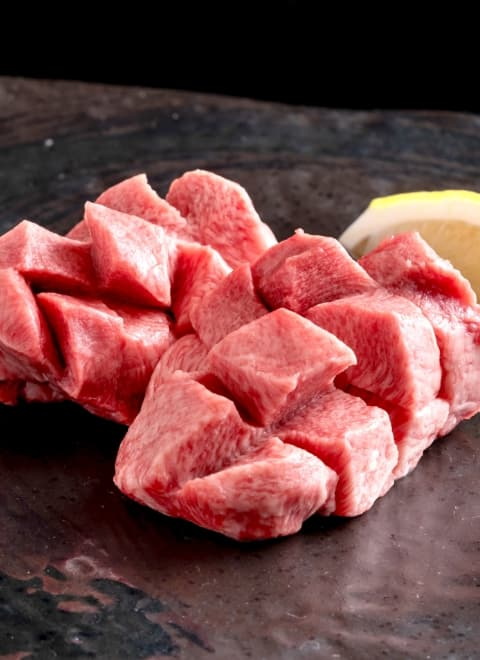
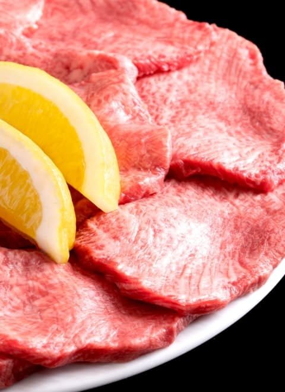

当店では、和牛を一頭丸ごと仕入れております。
一頭買いだからこそ、すべての部位を最高の状態で提供します。
舌の上でとろける霜降り、凝縮された赤身の旨味、そして 希少部位ならではの奥深い味わいを提供します。
当店では、和牛を一頭丸ごと仕入れております。
一頭買いだからこそ、すべての部位を最高の状態で提供します。
舌の上でとろける霜降り、凝縮された赤身の旨味、そして 希少部位ならではの奥深い味わいを提供します。
全席完全個室。
あなただけの時間をお楽しみいただけます。
あなただけの空間で五感を刺激するその瞬間は まさに”体験”と呼ぶにふさわしい時間です。
当店では、お客様に焼き師が専属で付き添い、 計算された「完璧な一口」を提供します。
また焼き師は、お客様の好みを伺いながら、
最も合うドリンクを提案いたします。
（※要事前予約）

自慢の黒毛和牛を最も美味しく食べていただくために
空間、香り、肉の厚みや切り方にもこだわり、
最も美味しい状態で提供しています。
極上タン
シャトーブリアン

タン
牛一頭買いだからこそ出来る骨まで味わえる本格ラーメン
丁寧に炊き出した牛骨スープは、澄んだコクと 芳醇な香りが楽しめる一杯です。
焼肉は単なる食事ではなく、人と人をつなぐ儀式。
牛右衛門では、すべてのお客様にとって「記憶に残る一皿」を 提供することを使命としています。
どうぞ、ゆっくりと
「特別な焼肉の時間」をお楽しみください。
〇〇書房「焼肉100名店」
××社「埼玉うまいもん手帖2025」
〇〇テレビ「マニアが選ぶ焼肉店」
N〇K「本当に美味しい肉の焼き方」
・和牛焼肉 牛右衛門
・住所
埼玉県さいたま市大宮区X―X―X
・営業時間
ランチ（牛骨ラーメンのみ） 11:00~14:00
ディナー（全メニュー提供） 17:00~24:00
・定休日
月曜日（祝日の場合は営業、翌平日を店休日と
します）
・席数
4人掛け10卓